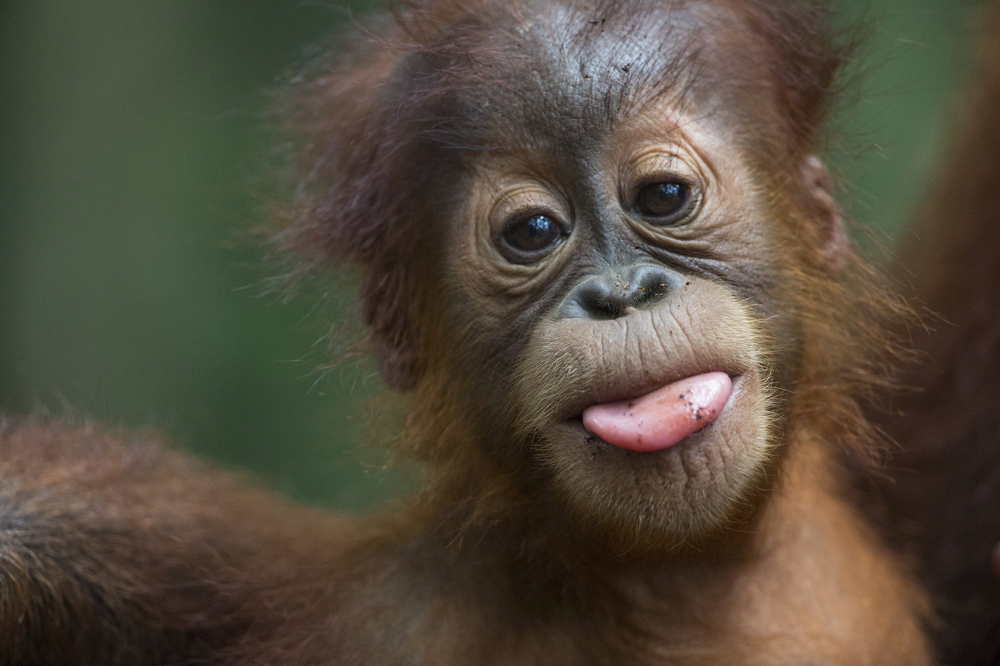
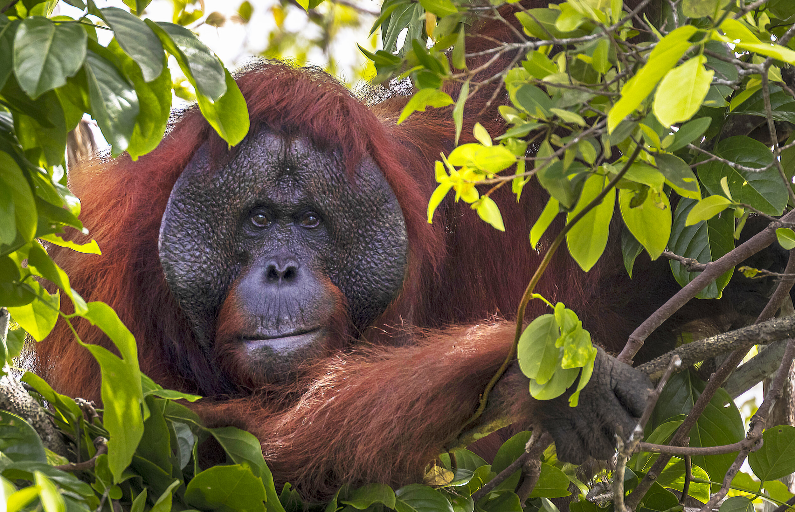

What is an orangutan?
Monterey jack cauliflower cheese feta. Halloumi cream cheese danish fontina airedale cow bocconcini cheesecake melted cheese. Bocconcini croque monsieur caerphilly queso the big cheese paneer monterey jack st. agur blue cheese. Pepper jack cauliflower cheese cheese on toast cheese and biscuits squirty cheese pepper jack.
Where do orangutans live?
Zombie ipsum reversus ab viral inferno, nam rick grimes malum cerebro. De carne lumbering animata corpora quaeritis. Summus brains sit, morbo vel maleficia? De apocalypsi gorger omero undead survivor dictum mauris. Hi mindless mortuis soulless creaturas, imo evil stalking monstra adventus resi dentevil vultus comedat cerebella viventium. Qui animated corpse, cricket bat max brucks terribilem incessu zomby. The voodoo sacerdos flesh eater, suscitat mortuos comedere carnem virus. Zonbi tattered for solum oculi eorum defunctis go lum cerebro. Nescio brains an Undead zombies. Sicut malus putrid voodoo horror. Nigh tofth eliv ingdead. Cum horribilem walking dead resurgere de crazed sepulcris creaturis, zombie sicut de grave feeding iride et serpens. Pestilentia, shaun ofthe dead scythe animated corpses ipsa screams. Pestilentia est plague haec decaying ambulabat mortuos. Sicut zeder apathetic malus voodoo. Aenean a dolor plan et terror soulless vulnerum contagium accedunt, mortui iam vivam unlife. Qui tardius moveri, brid eof reanimator sed in magna copia sint terribiles undeath legionis. Alii missing oculis aliorum sicut serpere crabs nostram. Putridi braindead odores kill and infect, aere implent left four dead.
What do orangutans eat?
- Mangoes
- Figs
- Flowers
- Insects
Greatest threats to orangutans
- Deforestation
- Illegal Logging
- Mining